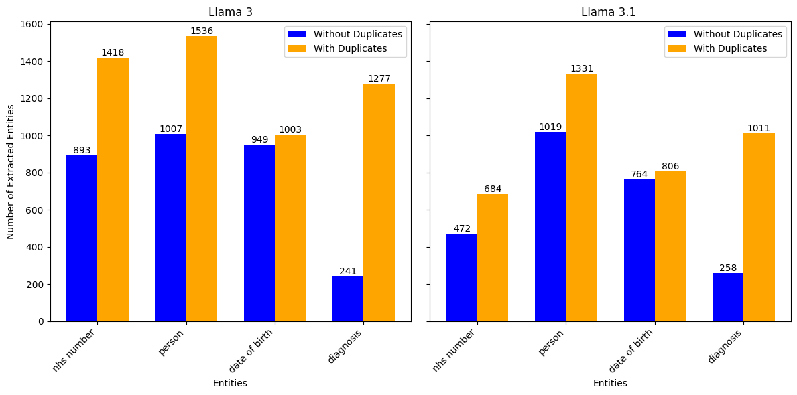
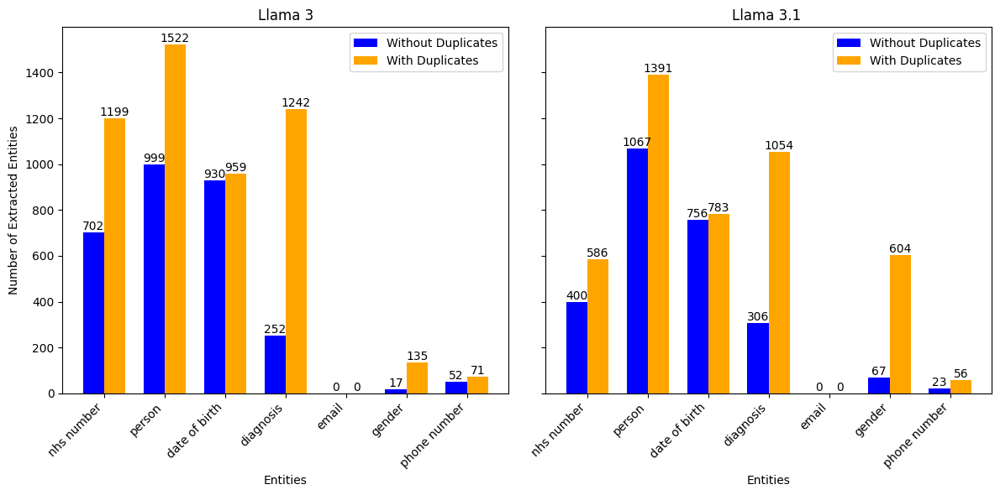
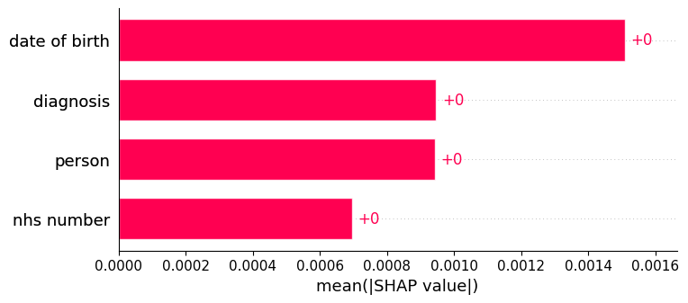
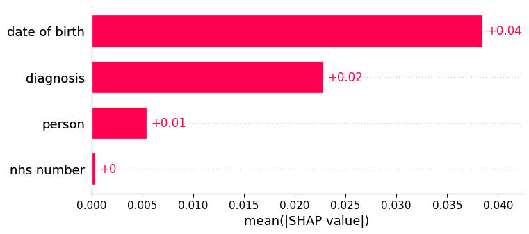

Experiment 1.0
This version of Experiment 1.0 was run using the repo at commit INSERT git SHA, and looks to explore generic clinical notes containing four entities: NHS Number, Person, Date of Birth, and Diagnosis. We also explore extracting further common entities which weren't explicitly injected.
Let's run an experiment with the Privacy Fingerprint (PrivFp) pipeline to understand each modular component, and explore some of the things we can do within each section.
The majority of the experimentation done in this example was done following the structure in notebooks/full_pipeline_example.ipynb.
Generating synthetic Patient Data with Synthea
First, we use step one of the full_pipeline_example.ipynb notebook to generate 1000 synthetic patient records. We specify 1000 by overriding the experimental config with the following line of code:
experimental_config.synthea.population_num = "1000"
Interestingly, this returns to us a list of outputs with a length of 954. Currently, our pipeline filters out duplicate patients and "wellness encounters", so this is expected. We can use the fact that this data is in structured form to check that each record is unique by running the following python code:
NHS_number_set = set([N["NHS_NUMBER"] for N in output_synthea])
print(len(NHS_number_set))
which returns 954.
Using a LLM to Generate Synthetic Medical Notes
PrivFp has the ability to use multiple different LLM's in a pipeline. In this experiment, we will use Llama 3 and LLama 3.1, both with around 8 billion parameters.
We will use each model to turn each Synthea structured output into a synthetic medical note. We use the supplied template prompt (c.f. Llama 3 template), but we could change this to see how this modifies our unstructured outputs.
Inspecting the outputs from both models, we notice a lot of notes start with: "Here is a clinical note..." or "Clinical Note:". Clearly, our prompt needs some fine-tuning from someone with specific domain knowledge if we want our notes to be more realistic - as mentioned, this is again easy to change within our pipeline.
Next, looking at NHS Numbers (remember these are synthetic), we see full stops, dashes and commas separating parts of the number. This makes it harder to use simple techniques like regular expressions to extract all NHS Numbers, and so we look to the more advanced methods of entity extraction.
As we would like the NHS Numbers to be of a consistent format, we can run a quick test using regular expressions to see how many we can successfully extract. If they keep the correct format, we expect to see a ten digit number in the clinical note.
We can use the following python code to count the number of times a ten digit number appears (assuming no spaces):
import re
nhs_numbers_found = 0
pattern = r'\b\d{10}\b'
for note in output_llm:
if re.search(pattern, note):
nhs_numbers_found += 1
Using notes produced by LLama 3.1 we find 473 NHS Numbers are returned and perhaps somewhat surprisingly, notes produced by LLama 3 returns 895 NHS Numbers.
Re-extracting Entities from the Patient Medical Notes
We run extraction using GliNER as our Named Entity Extraction Model. Looking at the plot below, typically more entities are extracted from clinical notes from Llama 3 compared to Llama 3.1. This is most obvious with the 'NHS Numbers' entity.

We also note that there are often duplicate entities extracted, and thus the total counts are well over 954. Taking NHS Numbers from the Llama 3 notes as an example, this means that multiple 'NHS Number' entities are extracted from some notes. Of the 532 notes that contain more than two 'NHS Number' entities, the majority of these come from strings containing "NHS Number" or similar, with 441 entities having the exact value "NHS Number". 886 reviews contain some 'NHS Number' entity.
Again using our Llama 3 example, looking at the 68 occasions where no 'NHS Number' was extracted, there are 9 NHS Numbers generated that can be picked up using our regular expression from earlier. One example of such a note is:
Here is a clinical note for Fannie Stroman's doctor:
Patient 8136111200, Fannie Stroman, born July 1st, 1970, was seen in the clinic today. She has been diagnosed with perennial allergic rhinitis and presents with ongoing symptoms of nasal congestion, itchy eyes, and sneezing throughout the year.
None of the other notes contain any text relating to "NHS Number".
Additional Entities
We can also use GliNER to investigate whether other entities are in the notes. Let us consider adding: Email, Gender and Phone Number.
We can add them to the entity extraction entity_list using the following code snippet:
experimental_config.extraction.entity_list = [
"nhs number",
"person",
"date of birth",
"diagnosis",
"email",
"gender",
"phone number"
]
In both Llama 3 and 3.1, we find that GliNER was unable to extract any emails, but examples of genders and phone numbers. Interestingly, the counts for the original entities, such as 'NHS Number' have fallen when additional entities were added (see plot below). For example, it may be that some NHS numbers were mistaken as phone numbers.

These interesting quirks when adding new entities support the use of our annotation tool. With this tool, you can annotate the notes and add new entities, alongside the entity extraction model. This tool can also help fine-tune the best names to give your entities. For example, mobile number may have been more effective than phone number in some cases.
Normalising Entities Extracted for Scoring
The next step of the pipeline essentially turns our extraction data from a JSON format to tabular data. It does this using one-hot encoding, where each row in the tabular data refers to a single note. If two notes contained the same entities, they would have the same value in the corresponding one-hot encoded column.
Currently, the first instance of an entity in the note is the one used for one-hot encoding. This has some issues. For example, we know that the string "NHS Number:" is often extracted as the 'NHS Number' entity. As this will often appear before the actual number in the notes, it is used instead when we one-hot-encode the data. This issue is something we are aware of, is planned to be fixed in future work, and we have performed some research on other methods of standardisation.
One simple fix (related to the above discussion) would be to ensure the 'NHS Number' entity contains numbers, or does not contain the string "NHS Number".
Uniqueness of Standardised Entity Values
Once we have tabular data, we can start exploring the privacy risk around our dataset. We do this by estimating the uniqueness of each data point as a proxy for re-identification risk. The more unique the data, the more identifiable the individual is likely to be.
The uniqueness is measured using PyCorrectMatch - see the docs for more details. A score of 1.0 means the row is unique, and 0.0 means all rows are the fundamentally the same. Currently, in our experiment, the lowest score for any row is 0.999. Therefore, every row is of high risk of re-identification. This makes sense, we have not attempted any de-identification steps.
Let us imagine a theoretical de-identification technique that finds every single NHS Number in dataset and replaces it with a sentinel value. This would mean that in our one-hot encoded dataframe, all values in the 'NHS Number' column would be one of two values - 0 and 1. An encoding of 0 would refer to NHS Numbers mapped to the sentinel value, and 1 would refer to no NHS Number being present.
We can alter our transformed dataset using the following line of code:
deid_dataset_1["nhs number"] = [random.randint(0, 1) for i in range(len(deid_dataset_1))]
Let's take this further and make an even more de-identified dataset where all persons are replaced with the initial of their first name, and thus the person column only contains 26 values.
deid_dataset_1["person"] = [random.randint(0, 25) for i in range(len(deid_dataset_1))]
For the date of birth column, let's say that the data in de-identified by removing the day, and only keeping the month and year. Assuming all patients are aged between 1 and 80, this would leave 960 possible months of birth, however we would expect some of duplicates.
We run the below code to generate a random list with duplicates:
dob_list = []
current_int = 0
for i in range(len(deid_dataset_1)):
dob_list.append(current_int)
if random.randint(0, 1):
current_int+=1
random.shuffle(dob_list)
This has a small effect on our privacy score. Previously, the lowest score was 0.998, whereas now it is 0.950. The data is still heavily skewed towards 1.0, meaning the majority of individuals are still highly re-identifiable.
Privacy Risk Explainer: SHAP
SHAP can be used as global and row-level measure of feature importance for a machine learning model's predictions. In our case, SHAP will indicate which variables have the greatest effect on the privacy risk score.
For the raw Llama 3 dataset using only the entities person, nhs number, date of birth and diagnosis, the global SHAP values are:

The date of birth entity has the greatest effect on predictions, followed by diagnosis, person and nhs number.
If we apply the de-identification steps we described above, we see the effect this has on the global SHAP values:

We see that person and NHS number now have a reduced impact on the score. This makes sense given our de-identification steps.
Traditional Privacy Metrics
Finally, our pipeline offers the ability to use traditional privacy metrics via PyCanon. These traditional metrics include k-anonymity, t-closeness and l-diversity.
When applying any de-identification techniques, we get the following values:
k-anonymity:1.0t-closeness:0.852l-diversity:1.0
This implies that even with the de-identification of some of our sensitive values, there still exist specific records that are likely re-identifiable.
Future Work
The are various additional routes of investigation that could be taken that we have not covered here.
Can we improve the prompt?
Excluding syntax, the prompt for project has not been iterated on since its initial creation for Llama 2. This could be explored further, perhaps combining with techniques for optimising a prompt, such as few-shot prompting and chain of thought. Could we ensure all the relevant information is included in each note? For added realism, do we occasionally want some information to be in strange formats?
Are there better language models we can use?**
We have been using the Llama series of LLMs, but could others be a good fit?
How can we improve our standardisation of the free text (i.e. before extraction)?
Are there steps we can take to put entities in free text, such as dates, in consistent forms to improve extraction? See our documentation for suggestions here.
How can we improve standardisation after extraction?
We have seen that often the text "NHS Number" is extracted alongside the real NHS number in a note, and currently we only use the first extracted entity. Can we integrate smarter ways to deal with this? See our documentation for suggestions here.
Are there better ways to score our privacy risk?
Is PyCorrectMatch the only option we should include? We have some research here.
How effective are traditional privacy risks?
How can we better compare our privacy risk score to traditional metrics?
How does the size of a dataset effect the privacy risk?
Do more notes always result in less identifiable records?
Further suggestions are welcome!